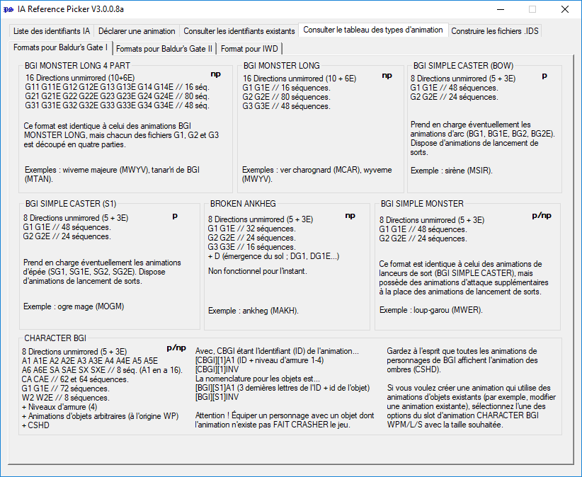
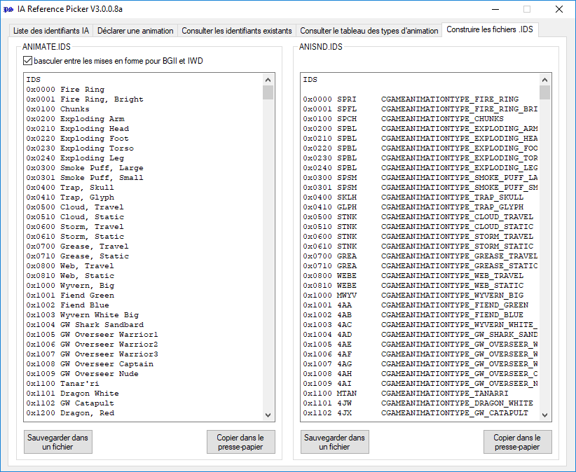
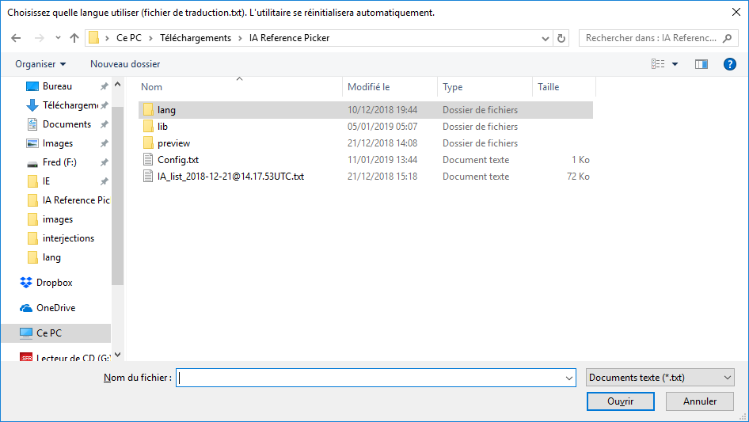

Un mod de Spellhold Studios pour Baldur's Gate II : ToB, Baldur's Gate Trilogy, Tutu, Baldur's Gate: Enhanced Edition, Siege of Dragonspear, Baldur's Gate II: Enhanced Edition, Icewind Dale: Enhanced Edition et EET.
Auteure : Erephine • Code WeiDU : Miloch, Sam et Gwendolyne
Le mod Infinity Animations modifie l'exécutable du jeu Baldur's Gate II : Trône de Bhaal (v 26498) ; ce qui vous permet d'ajouter de nouveaux emplacements d'animation de créatures et de personnages [NdT : appelés parfois « slots d'animation » dans ce document].
Infinity Animations Reference Picker > De quoi s'agit-il ? •HAUT DE PAGE
Règles de déclaration et d'enregistrement de slots d'animation (à lire avant tout !)
Si vous souhaitez ajouter vos propres animations dans le jeu, veuillez prendre le temps de lire et de suivre les directives décrites ci-dessous. La procédure est très simple et ne devrait durer que quelques minutes. Si tous le monde - vous y compris(e) - les respecte, les enregistrements de nouveaux slots ne nécessiteront aucune action de modération, ni demande d'approbation.
I. N'ajoutez que les animations dont vous disposez, pas celles dont vous auriez éventuellement besoin.
N'enregistrez que les animations que vous avez déjà ajoutées au jeu. Si vous êtes en train de développer un mod, N'ENREGISTREZ-PAS de slots par avance. Seul du contenu terminé peut être ajouté.
II. Le contenu que vous ajoutez doit être disponible publiquement.
Seule une animation rendue publique peut obtenir un slot. Si votre mod est encore en phase de développement, vous avez le choix : soit vous attendez sa publication pour enregistrer la ou les animation(s) concernée(s), soit vous la (ou les) télé-versez en même temps que vous les enregistrez. Idéalement, vos fichiers d'animation devraient être disponibles en tant qu'archives séparées et publiées en pièce jointe dans le forum Infinity Animations, mais ce n'est pas nécessaire tant qu'ils sont publiés par un autre biais (dans ce cas, vous autorisez explicitement quiconque à les utiliser et à les redistribuer dans ce contexte). Dans tous les cas, vous devez poster un lien de téléchargement des fichiers en question.
III. Vérifiez l'existence de doublons avant d'enregistrer vos animations.
Particulièrement lorsqu'il s'agit de conversions d'animations, il est possible qu'un autre moddeur ait déjà ajouté ces animations dans le jeu. S'il vous plaît, ne surchargez pas les slots disponibles avec des doublons inutiles.
IV. N'ajoutez que des animations qui enrichissent le jeu.
Cette règle n'est pas aussi clairement définie que les autres, mais elle reste valable. Demandez-vous si votre animation apporte vraiment quelque chose de nouveau au jeu avant de l'enregistrer. À savoir que des copies d'animations existantes ne seront certainement pas retenues, contrairement à une nouvelle variante d'animation pour une créature existante. Des animations amusantes (comme un point qui saute) peuvent être acceptées dans le contexte d'un mod approprié. Tout est affaire de bon sens.
V. Assurez-vous que le contenu que vous soumettez est aussi finalisé que possible avant de l'ajouter.
Si des mises à jour et des corrections mineures de vos animations (ou l'ajout d'animations d'armes, etc.) sont généralement admises, évitez, s'il vous plaît, d'effectuer des modifications plus importantes, ou de remplacer les références que vous avez ajoutées par d'autres animations. Ce n'est pas parce que vous les avez enregistrées qu'elles vous appartiennent exclusivement, et que personne ne les utilisera dans un mod.
VI. Vérifiez votre orthographe et utilisez des descriptions claires.
Les noms des animations doivent être rédigés en anglais lisible, et décrire autant que possible l'animation avec précision. « PINK BEHOLDER, SMALL » convient parfaitement, mais « OBSERVATEUR ROSE PETIT » ou « BEH_MEGAMOD 112 » (encore pire) ne sont pas souhaitables. Des noms propres comme « FALL FROM GRACE » conviennent aussi. N'oubliez pas que la taille limite d'une description est de 34 caractères.
Si vous avez lu et compris ces directives et si vous estimez que votre demande d'enregistrement est admissible, passez au chapitre suivant.
Infinity Animations Reference Picker > Règles de déclaration et d'enregistrement •HAUT DE PAGE
Utilisation du Reference Picker
➽ Il est fortement recommandé d'utiliser l'utilitaire fourni pour ajouter un slot d'animation.
Bien qu'il soit possible d'ajouter manuellement de nouveaux slots, en l'état actuel, cet utilitaire n'est pas très fiable pour corriger des données défectueuses (ce qui peut arriver facilement lorsqu'on les ajoute manuellement). Une liste de références inexacte peut engendrer des problèmes de compatibilité, voire des conflits, qui pourraient affecter d'autres mods, et éventuellement vous obliger à récupérer une liste non boguée pour ajouter de nouveau vos animations à partir d'une base saine.
Le chapitre suivant vous offre toute l'aide nécessaire pour ajouter des animations au jeu à l'aide du Reference Picker d'Infinity Animations.
Note : Vous pouvez exécuter Reference Picker dans une autre langue (s'il a été traduit). Voir plus bas.
Infinity Animations Reference Picker > Utilisation du Reference Picker •HAUT DE PAGE
Ajouter un slot d'animation
Voici un résumé étape par étape du processus.
⚠️ Note sur les conversions totales.
Bien entendu, si votre mod s'inscrit dans le contexte d'une conversion totale, sans rapport avec le jeu d'origine ou d'autres mods, vous pouvez ignorer l'ensemble du processus ci-dessous et garder une trace de votre propre jeu de références. Dans ce cas, ces références ne doivent pas être publiées dans la liste des animations.
1. Lancez l'utilitaire à partir du répertoire dans lequel vous l'avez installé (voir plus bas).
La fenêtre principale vous propose un menu composé de cinq onglets à la fonction explicite : « Liste des identifiants IA », « Déclarer une animation », « Consulter les identifiants existants », « Consulter le tableau des types d'animation » et « Construire les fichiers .IDS ».
Dans le tableau des types d'animation, vous trouverez un résumé des caractéristiques des types (ou formats) de slots d'animation pris en charge (avec p signifiant « paletted » [NdT : une animation disposant d'une palette permet de définir ses couleurs avec les champs couleurs du fichier .CRE], np « not paletted » [NdT : les couleurs de l'animation sont prédéterminées et prennent le pas sur celles du fichier .CRE] et pnp « les deux »). Si vous n'êtes pas certain(e) du format de votre animation, ou si vous souhaitez conserver le tableau sous le coude, c'est le bon moment pour l'ouvrir.

2. Cliquez sur l'onglet « Liste des identifiants IA ».
Une grande fenêtre vide s'ouvre, et il vous est demandé de charger la liste des animations à jour.
3. Récupérer la liste à jour dans le forum.
Dans le forum Infinity Animations, ouvrez la discussion épinglée Animation Listings. Ce lien vous y conduira directement. Cherchez le dernier message qui devrait contenir la balise de code contenant la liste de slots d'animations à jour. Elle ressemble à ceci :
0x100d 4AM ANNAH LARGE 5 Lt BGI MONSTER LONG 4 PART unpaletted
0x100e 4AN EMPTY LARGE 5 Lp BGI MONSTER LONG 4 PART unpaletted
0x100f 4AO PINK BEHOLDER, SMALL LARGE 5 Lx BGI MONSTER LONG 4 PART unpaletted
0x1010 4AP EMPTY LARGE 5 Lp BGI MONSTER LONG 4 PART unpaletted
0x1011 4AQ ----- LARGE 5 Lx BGI MONSTER LONG 4 PART unpaletted
0x1012 4AR EMPTY LARGE 5 Lp BGI MONSTER LONG 4 PART unpaletted
0x1013 4AS THIS IS AN EXAMPLE LARGE 5 Lx BGI MONSTER LONG 4 PART unpaletted
Copiez la liste entière (c'est important), avec toutes les données EMPTY et -----, jusqu'au dernier caractère (c.à.d. assurez-vous que vous n'avez pas oublié le dernier « d » de unpaletted, ou tout autre dernier caractère, de la dernière ligne), et copiez-la en appuyant sur le bouton « Coller à partir du presse-papier ».
⚠️ ☛ Note : Voici un autre moyen - et sans doute beaucoup plus simple - de charger la liste de slots d'animations à jour. Comme cette dernière n'a cessé de grossir, et est devenue de plus en plus difficile à lire et à sélectionner dans la discussion, les derniers contributeurs l'ont publiée sous la forme d'un fichier .txt joint à la fin de leur message, comme ici. Cherchez le dernier message contenant ce type de fichier, téléchargez-le, puis chargez-le à l'aide du bouton « Charger un fichier ». 😉
Si aucun message d'erreur ne s'affiche, la liste n'est sans doute pas corrompue, ce qui est bon signe :
Exemple de message d'erreur :
4. Choisissez le type de slot d'animation que vous souhaitez déclarer.
Cliquez sur l'onglet « Déclarer une animation ». Une nouvelle fenêtre s'ouvre. À ce stade, vous devriez connaître avec certitude le type de format de votre animation. En cas de doute, consultez le tableau des types d'animation (voir plus haut).
5. Saisissez les caractéristiques de votre animation.
La première fenêtre (Étape 1 : Trouver un slot disponible) vous permet de définir les caractéristiques de votre animation parmi les options disponibles : le type de slot, la taille du cercle de sélection, son sous-type (généralement unpaletted ou paletted, plus quelques autres pour les slots d'animations de personnage), et si votre animation nécessite ou non un paperdoll [NdT : silhouette dans l'écran des personnages] et/ou un jeu de sons.
Important : Votre animation n'a besoin d'un paperdoll que si elle concerne une créature recrutable ou dans laquelle il est possible de se métamorphoser. Si ce n'est pas le cas, veuillez choisir « No » pour cette option, ce qui est son paramétrage par défaut. Cela permettra de conserver les emplacements libres pour d'autres animations. Ne sélectionnez « Yes » que s'il vous est absolument indispensable d'avoir un paperdoll.
Vous remarquerez que seules sont affichées les options disponibles pour le type d'animation sélectionné (par exemple, les slots IWD ne proposeront que le sous-type « unpaletted »).
Presque toutes les combinaisons des options proposées sont prises en charge. Si vous choisissez une combinaison qui n'est pas disponible, ou si tous les emplacements du format sélectionné sont occupés, vous serez informé(e) qu'aucun emplacement correspondant n'a pu être trouvé et que le programme se terminera (vous devrez recommencer le processus décrit ci-dessus).
Sélectionnez les options appropriées pour continuer :
⚠️ Remarques sur l'utilisation de paperdoll et de soundset :
Cette version d'Infiniry Animations fonctionne sur le même principe que celle conçue par Erephine. Ce qui signifie que plusieurs types d'animations peuvent cohabiter en partageant le même identifiant, ce qui permet au moteur du jeu de gérer beaucoup plus d'animations et d'éviter les problèmes de compatibilité entre les nouveaux contenus publiés par les modeurs. Il possède cependant un inconvénient majeur : plusieurs animations peuvent partager le même jeu de sons. Pour la plupart des animations, ça n'a aucune conséquence puisqu'elles ne disposent pas de jeu de sons. En revanche, pour d'autres, ça peut s'avérer problématique. N'oubliez pas que ce fonctionnement signifie que seule une des animations partageant le même identifiant que d'autres peut disposer d'un paperdoll, et que toutes les animations partageant le même identifiant utiliseront le même jeu de sons.
Imaginons par exemple le pire des scenario. Vous déclarez une animation de type IWD avec un petit cercle de sélection et sans paperdoll. Vous utiliserez donc partiellement un slot IWD SMALL unpaletted (« partiellement » parce que le paperdoll correspondant à l'identifiant sera toujours disponible), mais aussi la totalité d'un slot IWD LARGE unpaletted. Ce sont donc deux slots qui seront utilisés par la même animation. Mais si le même slot IWD avait nécessité un paperdoll, il aurait utilisé l'ensemble des slots IWD SMALL unpaletted et IWD LARGE unpaletted. De plus, puisque le paperdoll correspondant à l'identifiant de l'animation n'est plus disponible, l'opération aurait aussi utilisé partiellement un slot BGII UNSPLIT EXT. unpaletted et un slot BGII UNSPLIT EXT. paletted qui partagent eux-aussi le même identifiant que l'animation IWD. L'enregistrement d'une seule animation aurait donc utilisé totalement deux slots et partiellement deux autres. En effet, ces quatre slots partagent le même identifiant et le même jeu de sons.
C'est le cas de :
0x502a 3BQ MARILITH_IWD LARGE 5 It IWD LARGE unpaletted
0x5267 3BQ ----- NORMAL 3 Ix IWD SMALL unpaletted
0x5b2a 3BQ GW_NORDOM_PST NORMAL 3 Bt BGII UNSPLIT EXT. unpaletted
0x5d67 3BQ ----- NORMAL 3 Bx BGII UNSPLIT EXT. paletted
Tous ces slots partagent le même identifiant (3BQ) et, par conséquent, ces 4 slots (dont seulement deux comportent une animation) PARTAGENT le même paperdoll.
Rappelez-vous que, de par sa conception, IA Reference Picker ne peut attribuer de paperdoll qu'à UN SEUL SLOT parmi ceux qui partagent le même identifiant, et oblige les autres à NE PAS UTILISER de paperdoll. Dans ce cas, les animations MARILITH_IWD et GW_NORDOM_PST ne pourront donc pas être utilisées pour des PNJs car ces derniers auraient la même apparence dans l'écran des personnages, ce qui n'aurait aucun sens. Rassurez-vous, dans ce cas particulier, le problème ne se posera pas car les modeurs n'ont pas demandé de paperdoll. 😉
Il en va de même pour les jeux de sons 2DA. L'ENSEMBLE des identifiants 3BQ partagent le même jeu de sons. Si l'animation MARILITH_IWD est installée avec son jeu de sons (3BQ.2DA), alors GW_NORDOM_PST l'utilisera AUSSI, et vice versa. Si aucun n'utilise de jeu de sons, alots elle pourront partager le même identifiant sans problème. C'est ainsi que IA Reference Picker fonctionne depuis sa première version.
Cependant, la mise à jour de IA Reference Picker permet de résoudre la plupart de ces conflits en proposant une nouvelle option : 2DA Soundset. Si vous voulez être certain(e) que votre animation dispose d'un paperdoll et d'un jeu de sons uniques, vous pouvez désormais forcer IA Reference Picker à « geler » l'ensemble des slots partageant le même identifiant. Par exemple; si le slot MARILITH_IWD avait nécessité un jeu de sons, il pourrait dorénavant réserver les quatre slots potentiels correspondant au même identifiant, rendant impossible l'enregistrement d'une autre animation avec le même identifiant.
Pour plus de clareté, illustrons ce comportement avec un exemple :
Si votre animation nécessite un jeu de sons uniques, une fenêtre s'ouvrira pour vous avertir des conséquences de votre choix. Si vous cliquez « Oui », IA Reference Picker trouvera un slot disponible correspondant à un identifiant non utilisé et gèlera tous les slots correspondant à cet identifiant (vous garantissant l'utilisation d'un jeu de sons unique). Si vous cliquez « Non », il agira normalement (plusieurs types d'animation partagent le même identifiant, mais un seul peut bénéficier d'un paperdoll). Ainsi, les animations nécessitant un jeu de sons dédiés pourront en bénéficier alors que les autres pourront toujours partager le même identifiant. Ce qui permettra de déclarer un plus grand nombre d'animations.
Mais si vous avez sélectionné « No » pour un paperdoll, puis « Yes » pour un jeu de sons (comme dans l'exemple décrit), cliquer sur le bouton « Oui » dans la fenêtre popup effacera l'option choisie auparavant pour le paperdoll :
Vous devrez donc retourner dans la barre d'options du paperdoll et sélectionner l'option « Yes » afin que le Reference Picker trouve un slot disponible et vous permette de saisir un nom descriptif :
Bien que contraignante, cette procédure a pour but de bien faire comprendre à l'utilisateur(trice) qu'un paperdoll est disponible pour son slot, même si il(elle) ne compte pas l'utiliser.
► Pour résumer, si vous avez besoin d'un jeu de sons, vous obtiendrez AUTOMATIQUEMENT un paperdoll puisqu'aucune autre animation ne partagera son identifiant. Mais n'oubliez-pas que ce n'est pas parce que votre animation dispose d'un paperdoll que vous êtes obligé(e) de l'utiliser. Cela signifie simplement qu'aucune autre animation partageant ce même identifiant ne pourra en avoir.
6. Confirmez.
Si vous avez choisi une configuration valide, une nouvelle ligne rouge apparaît qui récapitule les informations détaillées sur le slot correspondant aux critères que vous avez choisis.
Vérifiez que les valeurs du type, du sous-type, de la taille du cercle de sélection, de l'option de paperdoll et du jeu de sons de votre animation sont corrects. Si oui, continuez. Sinon, appuyez sur le bouton « Effacer les caractéristiques » et recommencez les étapes précédentes.
7. Saisissez un nom.
Saisissez un nom décrivant votre animation (en respectant les directives énoncées plus haut) dans la deuxième fenêtre (Étape 2 : Saisir un nom).
Dans la troisième fenêtre (Étape 3 : Déclarer votre slot), cliquez sur le bouton « Enregistrer le slot » pour continuer.
8. Installer votre slot dans le jeu.
Quand vous en aurez terminé, vous pourrez copier ou noter les codes ANIMATE.IDS et ANISND.IDS affichés dans la dernière fenêtre en bas (Étape 4 : Installer votre slot dans le jeu). Ce sont les entrées qu'il faut insérer dans les fichiers .ids pour que votre slot d'animation soit reconnu par NearInfinity et les autres outils de modding. Si vous écrivez un programme d'installation pour votre mod, vous estimerez probablement plus utile d'utiliser le code WeiDU pour ajouter vos slots aux fichiers .ids du jeu (cliquez alors sur le bouton « Copier dans le presse-papier »).
9. Déclarer un autre slot.
Si vous souhaitez déclarer plusieurs slots à la suite, cliquez sur le bouton « Déclarer un autre slot » et recommencez les étapes précédentes.
10. Pour conclure, l'étape la plus importante de toutes.
Retournez dans la fenêtre Liste des identifiants IA qui affiche maintenant la nouvelle liste d'animations, similaire à celle que vous avez copiée précédemment :
Dans tous les cas, la liste doit contenir plus d'entrées qu'avant. Pour l'exemple que nous traitons, elle devrait ressembler à ceci :
0x100d 4AM ANNAH LARGE 5 Lt BGI MONSTER LONG 4 PART unpaletted
0x100e 4AN EMPTY LARGE 5 Lp BGI MONSTER LONG 4 PART unpaletted
0x100f 4AO PINK BEHOLDER, SMALL LARGE 5 Lx BGI MONSTER LONG 4 PART unpaletted
0x1010 4AP EMPTY LARGE 5 Lp BGI MONSTER LONG 4 PART unpaletted
0x1011 4AQ ----- LARGE 5 Lx BGI MONSTER LONG 4 PART unpaletted
0x1012 4AR EMPTY LARGE 5 Lp BGI MONSTER LONG 4 PART unpaletted
0x1013 4AS THIS IS AN EXAMPLE LARGE 5 Lx BGI MONSTER LONG 4 PART unpaletted
0x6840 0A0D PISCATA ROSEA NORMAL 3 Cx CHARACTER BGII WQL paletted
Vous devez copier et publier cette liste complète dans la discussion épinglée Animation Listings du forum Infinity Animations. En voici de nouveau le lien, pour plus de commodité. Sous la liste, le bouton « Copier dans le presse-papier » vous simplifiera la tâche. Le contenu de la liste est copié dans votre presse-papier (n'oubliez pas qu'il écrasera le contenu de ce dernier) et peut être collé dans la discussion.
Afin de conserver le formatage de la liste et d'éviter qu'elle ne ressemble à un pâté illisible, collez-la entre balises [codebox] [/codebox]. Pré-visualisez votre message. Si la liste affichée dans votre message correspond parfaitement à celle affichée dans la fenêtre IA Reference List, publiez-la. N'oubliez-pas de télé-verser les fichiers bam de votre animation dans la discussion IA content thread, s'ils ne sont pas encore disponibles.
Notes :
Vous pouvez aussi sauvegarder la liste des slots d'animations dans un fichier .txt et le publier en pièce jointe dans la discussion épinglée Animation Listings du forum Infinity Animations. Dans ce cas, sauvegardez-le à l'aide du bouton « Sauvegarder dans un fichier » et privilégiez un nom de fichier standard comme celui-ci ; IA_List_2018-12-05.txt (IA List_année-mois-jour). 😉
Par défaut, la nouvelle version du Reference Picker sauvegarde le fichier contenant la liste des animations avec des informations de date/heure au format UTC, ou « Temps universel coordonné », une échelle de temps adoptée comme base du temps civil international, afin d'éviter les problèmes de compatibilité entre des listes fournies par des utilisateurs utilisant des informations de temps locales.
Félicitations, vous venez de déclarer et d'enregistrer une référence d'animation ! 🥂
Infinity Animations Reference Picker > Ajouter un slot d'animation •HAUT DE PAGE
Jeux de sons
Chaque slot d'animation dispose de quelques sons standards qui lui sont assignés (bruits de pas, etc.). Par souci de simplicité, ils sont tous liés aux informations de slots d'animation existants. Par exemple, tout emplacement de type IWD ajouté aura le même jeu de sons. Lorsque cela ne vous convient pas, vous pouvez changer ces sons en créant un fichier 2DA portant le nom de l'identifiant de l'animation (c'est-à-dire 0A0D.2DA pour notre animation PISCATA ROSEA ci-dessus). Pour vous simplifier la vie, vous pouvez utiliser l'un des modèles existants (par exemple MAIR.2DA) que vous modifierez.
Infinity Animations Reference Picker > Jeux de sons •HAUT DE PAGE
Parcourir les identifiants existants
Le Reference Picker vous permet également de consulter un aperçu plus détaillé des animations actuellement implémentées.
Pour y accéder, cliquez sur l'onglet « Consulter les identifiants existants » :
En haut de la fenêtre, une barre d'avancement colorée affiche l'utilisation des slots d'animation en indiquant les pourcentages de slots utilisés, partiellement disponibles, et libres. J'imagine que jeter un coup d'œil au pourcentage de références d'animations non utilisées vous rassurera si culpabilisiez de vous « approprier » trop de slots d'animations. 😎
Les slots partiellement libres sont disponibles pour toutes les animations, sous réserve qu'elles ne peuvent pas disposer de leur propre paperdoll (puisque certains formats de slots d'animation différents peuvent coexister, mais auraient des fichiers de paperdoll qui entreraient en conflit).
À gauche, se trouve la liste de toutes les animations ajoutées dans le cadre de ce mod, triées par identifiant et description. Cliquez sur l'une d'entre elles pour initialiser ses informations. Les caractéristiques de l'animation sélectionnée sont alors affichées sous la barre d'avancement, tandis qu'apparait à droite la liste de tous les fichiers .BAM que le slot utilise.
Le navigateur permet aussi de visualiser des images des animations enregistrées. Pour les afficher, il suffit de placer un fichier .gif portant le même nom que le slot ID dans le sous-répertoire 📁 referencepicker/preview (s'il n'existe pas, créez-le). Par exemple, l'animation ID 0x1001 recherchera le fichier 0x1001.gif. L'image sera affichée à droite de la liste de fichiers du slot d'animation.
☛ Remarque : Le nombre hypothétique de slots disponibles n'est pas vraiment infini, mais se compte en milliers, alors, ne vous inquiétez pas si la barre affiche 90 % libres, même si certains emplacements sont utilisés.
Infinity Animations Reference Picker > Parcourir les identifiants existants •HAUT DE PAGE
Construire les fichiers .IDS
Vous pouvez construire les fichiers .ids en cliquant sur l'onglet « Construire les fichiers .IDS ».
Cela ouvre une nouvelle fenêtre affichant les fichiers .IDS complets créés à partir des animations originales du jeu et de la liste que vous avez importée à l'étape 3.
Présentation dans les styles BGII et IWD.
L'onglet ANIMATE.IDS vous permet de basculer entre les mises en forme pour Baldur's Gate II et pour Icewind Dale, selon votre préférence. Puisque ce fichier ne sert que comme référence pour NearInfinity et d'autres outils apparentés, libre à vous de consulter la liste au format de BGII (par exemple, GOBLIN_AXE) ou au format plus court de IWD (Goblin, Axe). En revanche, les codes utilisés pour ajouter de nouveaux slots dans ce fichier doivent correspondre au format standard de BGII.
Ce paramétrage est mémorisé par l'utilitaire.

Construire les fichiers IDS.
Vous pouvez copier chacun de ces nouveaux fichiers avec le bouton « Copier dans le presse-papier ». Le contenu de la liste est copié dans votre presse-papier (n'oubliez pas qu'il écrasera le contenu de ce dernier) et peut être collé dans un autre fichier.
Note : Vous pouvez aussi les sauvegarder directement sous forme de fichiers IDS à l'aide du bouton « Sauvegarder dans un fichier ». 😉
Infinity Animations Reference Picker > Construire les fichiers .IDS •HAUT DE PAGE
Définition des slots d'animation
Il s'agit des informations affichées dans le tableau des types d'animation, avec éventuellement plus de renseignements supplémentaires. Puisque la taille des animations pour BGII est limitée à 255 x 255 pixels, vous devrez utiliser les slots des formats 4 PART ou de DRAGON si vous créez une animation plus grande. N'oubliez pas que cette taille inclue celle des objets équipés : si les tailles cumulées de l'animation de base ET de l'objet dépassent 255 x 255 pixels, votre animation ne sera pas affichée correctement, ou pire, provoquera un crash du jeu.
NdT : les formats d'animations sont définis par quelques termes techniques, dont les principaux sont détaillés ci-dessous
mirrored : ne nécessitent pas de directions « Est » qui sont générées automatiquement par le jeu.
unmirrored : nécessitent des directions « Est » qui ne sont pas générées automatiquement par le jeu.
split : chaque action disponible est répartie dans un fichier BAM distinct.
unsplit : chaque fichier bam regroupe l'ensemble des actions disponibles.]
Types de formats d'animations Baldur's Gate I
⁂ BGI MONSTER LONG 4 PART (classic) - monster_quadrant (EE)
Ce format est identique à celui des animations BGI MONSTER LONG, mais chaque fichier G1, G2 et G3 est découpé en quatre parties [NdT : chaque partie correspondant à un quart de l'image].
Exemples : wiverne majeure (MWYV), tanar'ri de BGI (MTAN).
☛description des séquences
⁂ BGI MONSTER LONG (classic) - monster_large16 (EE)
Actuellement non fonctionnel, ce slot affichera en boucle l'animation passive (idle) pour toutes les séquences. (J'ai pensé que ce ne serait sans doute pas le type d'animation le plus populaire, donc cela pourrait changer bientôt, ou pas).
Note sur les paperdolls : Ces slots prennent en charge les paperdolls, mais leur système de nomenclature pourrait s'avérer incohérent à ce stade. Essayez [ID]INV, [ID]0INV, [ID]1INV... L'un d'entre eux devrait fonctionner.
Ce format est identique à celui des animations de lanceurs de sort (BGI SIMPLE CASTER), mais possède des animations d'attaque supplémentaires à la place des animations de lancement de sorts.
Exemple : loup-garou (MWER).
☛description des séquences
⁂ CHARACTER BGI (classique) - character_old (EE)
8 Directions unmirrored (5 + 3E)
A1 A1E A2 A2E A3 A3E A4 A4E A5 A5E A6 A6E SA SAE SX SXE // 8 séquences (A1 en a 16).
CA CAE // 62/64 séquences.
G1 G1E // 72 séquences.
W2 W2E // 8 séquences.
+ Niveaux d'armure (4) [NdT : ils correspondent à la représentation graphique du type d'armure portée (plate, cotte de mailles, cuir et robe)]
+ Animations d'objets arbitraires (à l'origine WP).
+ CSHD.
Avec, CBGI étant l'identifiant (ID) de l'animation...
[CBGI][1]A1 (ID + niveau d'armure 1-4)
[CBGI][1]INV
La nomenclature pour les objets est...
[BGI][S1]A1 (3 dernières lettres de l'ID + identifiant de l'objet)
[BGI][S1]INV
Contrairement aux autres formats d'animation, équiper un personnage avec un objet dont l'animation n'existe pas FAIT CRASHER le jeu.
Gardez à l'esprit que toutes les animations de personnages de BGI affichent l'animation des ombres (CSHD).
Si vous voulez créer une animation qui utilise des animations d'objets existants (par exemple, modifier une animation existante), sélectionnez l'une des options du slot d'animation CHARACTER BGI WPM/L/S avec la taille souhaitée.
Types de formats d'animations Baldur's Gate II
⁂ DRAGONS (XDR) (classic) - monster_quadrant (EE)
9 Directions mirrored
Les images sont découpées en neuf parties.
5 Animations (5 : 1 split no base ; 4 : 2 split).
Animation + Partie de l'image + Découpage + Direction.
Avec, XDR1 étant l'identifiant (ID) de l'animation...
[XDR1][1][9][0][2] correspond à la première animation (marche), la 9ème partie de l'image (coin inférieur droit), premier découpage et la direction sud-ouest (troisième direction).
Les parties de l'image sont classées du coin supérieur gauche au coin inférieur droit.
Vous pouvez affecter à ces animations des animations d'objets, comme aux personnages. Ces animations d'objets sont regroupées dans deux fichiers, G1[ID] et G2[ID]. Ainsi, les animations d'un arc seraient définies dans les fichiers G1BW et G2BW, celles d'une épée dans les fichiers G1S et G2S... Contrairement aux formats d'animation de personnage, équiper une créature avec un objet dont l'animation n'existe pas ne fait pas crasher le jeu.
9 Directions mirrored
G1 // 72 séquences [NdT : décomposé ainsi = Marche - Sur ses gardes - Immobile - Touché - Tombe - Mort - S'endort - Se relève].
G2 // 63 séquences [NdT : décomposé ainsi = Attaque 1 - Attaque 2 - Attaque 3 - Lancer 1 - Lancer 2 - Incante un sort - Lance un sort].
C'est une variante étendue du format BGII SPLIT, mais toutes ses séquences sont regroupées dans un seul fichier, plutôt que réparties dans plusieurs. Prend également en charge les animations d'objet (voir plus haut).
Exemples : Mélissanne (MMEL), tyramort (MBEG).
☛description des séquences
⁂ CHARACTER BGII (classic) - character (EE)
8 Directions mirrored
A1 A2 A3 A4 A5 A6 A7 A8 A9 SA SS SX // 9 séquences.
CA // 72 séquences.
G1 (not split) // 99 séquences.
+ Niveaux d'armure (4) [NdT : ils correspondent à la représentation graphique du type d'armure portée (plate, cotte de mailles, cuir et robe)]
+ Animations d'objets arbitraires (à l'origine WQ).
CBGT étant l'identifiant (ID) de l'animation...
[CBGT][1]A1 (ID + niveau d'armure 1-4)
[CBGT][1]INV
La nomenclature pour les objets est...
[BGT][S1]A1 (les 3 dernières lettres de l'ID + l'identifiant de l'objet)
[BPT][S1]INV (la deuxième lettre est obligatoirement un P !!)
^ Cette nomenclature est due aux animations de BGII qui utilisent des objets WQ avec des paperdolls WP. Elle ne s'applique qu'aux fichiers INV. Ce P sera toujours positionné sur l'emplacement de la deuxième lettre (3 ou 0, les deux lettres d'identification restant intactes.)
Contrairement aux autres formats d'animation, équiper un personnage avec un objet dont l'animation n'existe pas FAIT CRASHER le jeu.
Ce format d'animation est différent de celui utilisé par le jeu original, dans la mesure où j'ai décidé de ne pas découper les séries d'animation G. Mais leur contenu est identique, et est simplement regroupé dans un seul fichier (voir les formats BGII SPLIT/BGII UNSPLIT). Ainsi, si vous souhaitez dupliquer ou modifier une animation de personnage existante, vous devrez fusionner les fichiers G1, G11, G12... dans un fichier unique G1. Je l'ai fait principalement pour ne pas surcharger le répertoire override (et faciliter la création et le chargement de nouveau contenu).
Si vous voulez créer une animation qui utilise des animations d'objets existants (par exemple, modifier une animation existante), sélectionnez l'une des options du slot d'animation CHARACTER BGII WQM/L/N/S avec la taille souhaitée.
Format d'animation IWD
⁂ IWD (classic) - monster_icewind (EE)
8 Directions unmirrored (5 + 3E)
A1 A1E A2 A2E A3 A3E A4 A4E // Respectivement 5 et 8 séquences [NdT : Attaques. A4 = lancer d'arme à projectiles].
CA CAE // Respectivement 5 et 8 séquences [NdT : Lancer un sort].
DE DEE // Respectivement 5 et 8 séquences [NdT : Mourir (la créature tombe)].
GH GHE // Respectivement 5 et 8 séquences [NdT : Blessé (la créature est touchée par une arme ou un sort)].
GU GUE // Respectivement 5 et 8 séquences [NdT : Se relever].
SC SCE // Respectivement 5 et 8 séquences [NdT : Rester immobile, sur ses gardes].
SD SDE // Respectivement 5 et 8 séquences [NdT : Rester immobile, passif].
SL SLE // Respectivement 5 et 8 séquences [NdT : S'endormir (la créature tombe inconsciente)].
SP SPE // Respectivement 5 et 8 séquences [NdT : Incanter un sort].
TW TWE // Respectivement 5 et 8 séquences [NdT : La créature est étendue morte sur le sol].
WK WKE // Respectivement 5 et 8 séquences [NdT : Marcher].
+ Objet (SA1, MA1...).
Les animations IWD peuvent coexister avec les animations BGII SPLIT/UNSPLIT (qui, elles-mêmes, peuvent coexister avec certaines animations au format 4 PART, etc.) en partageant le même identifiant, tant que l'une d'elle ne nécessite pas de paperdoll. En fait, c'est souvent le cas dans le jeu original.
On peut affecter n'importe quel type d'objet à un slot IWD. Cependant, la dernière lettre de l'identifiant de l'objet est supprimée (par exemple, WH devient W).
Contrairement aux formats d'animation de personnage, équiper une créature avec un objet dont l'animation n'existe pas ne fait pas crasher le jeu.
☛description des séquences
Suggestions de conversions
⁂ Planescape Torment
Les animations PST possèdent généralement la structure suivante :
5 Directions mirrored
AT1 AT2 // 5 séquences (Attaques).
C2S // 5 séquences (Stopper le combat, baisser sa garde).
CF1 // 5 séquences (Rester immobile, sur ses gardes).
(CF2)
DFB // 5 séquences (Tomber - ou mourir).
GUP // 5 séquences (Se relever).
HIT // 5 séquences (Blessé - la créature est touchée par une arme ou un sort).
S2C // 5 séquences (Se mettre en garde).
SF1 // 5 séquences (Rester passif (tourner la tête...).
SP1 // 5 séquences (Incanter un sort).
SP2 // 5 séquences (Lancer un sort).
SP3 // 5 séquences.
(SP4)
STC // 5 séquences (Rester immobile, sur ses gardes).
STD // 5 séquences (Rester immobile, passif).
TK1 // 5 séquences (Parler).
TK2 // 5 séquences (Parler).
TK3 // 5 séquences (Parler).
(TK4, TK5, TK6).
Cela signifie qu'elles devraient être converties autant que possible aux formats BGII UNSPLIT EXT. ou personnage de BGII, afin de conserver la plupart de leurs diverses animations hors combat, et leurs nombreuses directions dans les actions de marche et de course. Ces deux dernières seraient perdues si elles étaient converties aux formats IWD et BGI. Puisque la plupart de leurs animations disposent de cinq directions de type mirrored, vous devrez les assembler correctement, et les fusionner dans le bon ordre dans des fichiers G1 et G2.
Infinity Animations Reference Picker > Définition des slots d'animation •HAUT DE PAGE
Installation manuelle
⁂ Installation sans le programme d'installation WeiDU fourni :
► Obsolète depuis la version 6.0.0 :
La modification de l'exécutable est effectuée avec les outils bsdiff/bspatch de Colin Percival disponibles ici.
ii. Copier dans votre répertoire de jeu le fichier .patch (situé dans le répertoire infinityanimations/patch) et bspatch.
iii. Dans une ligne de commande, tapez ceci : bspatch BGMain.exe BGMain_patched.exe Infinity10010043.patch
iv. Lancez le jeu avec BGMain_patched.exe, ou renommez-le BGMain.exe (assurez-vous de conserver l'exécutable original au cas où).
⁂ Reference Picker
Extrayez le répertoire 📁 Reference Picker/ et son contenu dans l'emplacement de votre choix.
Vous pouvez exécuter Reference Picker dans une autre langue (s'il a été traduit) en modifiant le fichier Config.txt. Sous la section [Program], attribuez à la variable « UseLang » la langue que vous souhaitez utiliser. Par exemple, UseLang=French chargera les textes de la traduction situés dans le fichier \lang\French.txt . Ces textes étant chargés au lancement du programme, si vous modifiez la langue pendant son utilisation, vous devrez le relancer pour que la modification prenne effet.
⚠️ Le fichier de traduction doit être encodé en UTF-16 LE BOM. UTF-8 ne fonctionnera pas.
Vous pouvez aussi modifier à tout moment la langue utilisée en utilisant la combinaison de touches [Alt+L]. La procédure provoquera la fermeture et le redémarrage automatiques de l'utilitaire dans la langue choisie.

➽ Le fichier anims.list est indispensable pour lancer l'utilitaire. NE LE MODIFIEZ PAS.
Infinity Animations Reference Picker > Installation manuelle •HAUT DE PAGE
Historique des versions
Version 6.0.0 (nn mars 2021)
Modification des noms de code des animations pour les rendre compatibles avec les code pages non occidentaux (suppression de la procédure automatique de changement de code page dans le patch de l'exécutable) et correction des doublons de slots d'animation de dragon (XDR3, XDR6). 😉
Ajout de la compatibilité avec les jeux EE: adaptation du code pour une meilleure compatibilité du mod, avec notamment l'harmonisation des noms des animations.
Réécriture de l'utilitaire IA Reference Picker (supporte désormais les traductions) et mise à jour de sa documentation.
Ajout de la traduction française (Gwendolyne).
Téléversement du mod dans le compte GitHub officiel de Spellhold Studios.
Version Beta 5 (12 mai 2010)
Modification du patch de l'exécutable afin qu'il modifie le code page et redémarre l'ordinateur s'il détecte un code page non occidental.
Mise à jour du patch de l'exécutable pour qu'il reconnaisse les avatars de voleur de BG1.
Clonage des fichiers d'attribution de sons existants [NdT : fichiers 2da] pour créer ceux qui manquent.
Ajout des autres fichiers d'attribution de sons manquants dans le répertoire 📁 /content.
Ajout des sons manquants du minotaure et de l'esprit des eaux.
Suppression de l'empilage des mêmes animations dans le fichier chitin.key, qui posait problème.
Affectation aux créatures de leurs jeux de sons lorsque c'est approprié (mise à jour importante).